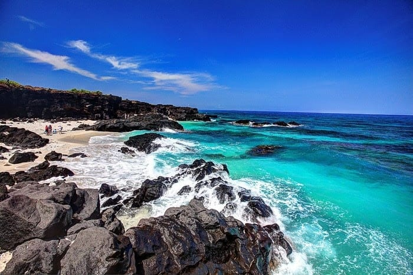

Bãi tắm Lý Sơn
Lý Sơn là một huyện đảo thuộc tỉnh Quảng Ngãi, Việt Nam.
Trước đây, Lý Sơn được gọi là Cù lao Ré, theo cách lý giải của dân gian là “cù lao có nhiều cây Ré”. Hòn đảo là vết tích còn lại của một núi lửa với 5 miệng, được hình thành cách đây khoảng 25-30 triệu năm.[3] 5 ngọn núi là nguồn giữ các mạch nước ngầm chính cung cấp nguồn nước cho toàn bộ người dân trên đảo.
Huyện Lý Sơn là huyện đảo được tách ra từ huyện Bình Sơn của tỉnh Quảng Ngãi theo quyết định của Thủ tướng Chính phủ Việt Nam năm 1992[4] và trở thành huyện đảo tiền tiêu từ khi đó. Nói về huyện đảo này, nhân dân địa phương có ca dao thủy trình:
Trực nhìn ngó thấy Bàn Than
Ba hòn lao Ré nằm ngang Sa Kỳ.
Tìm hiểu thêm trên Wikipedia
